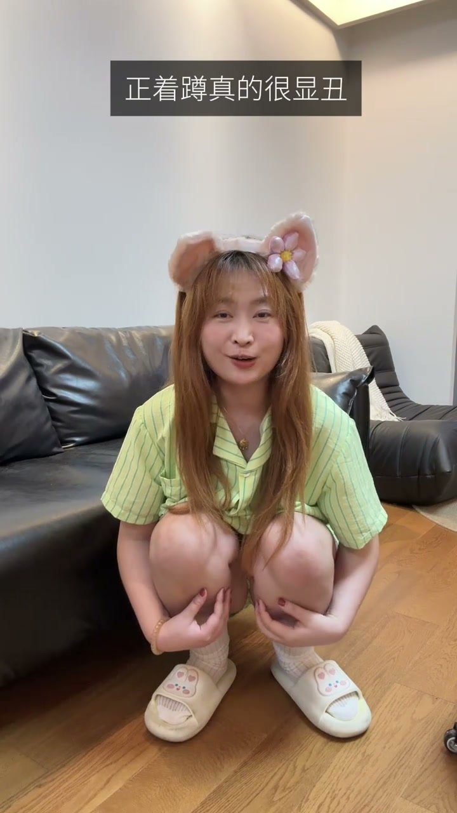
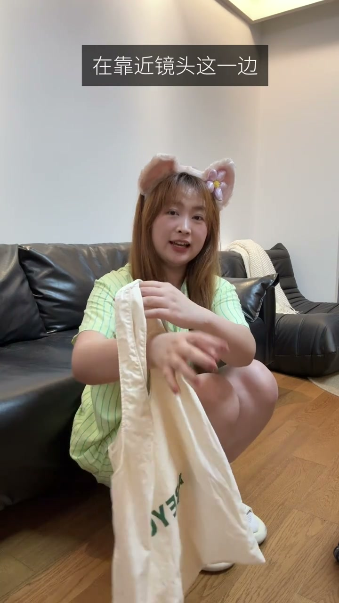

痛点：蹲下像拉屎？
00:00一次学一个动作，今天来学蹲着拍。为什么别人蹲下是大美女，而你蹲下是来拉屎的？关键是4个细节。
[00:08] 痛点：别人蹲下是大美女，你蹲下像拉屎
The pain point: others squatting look gorgeous; you squatting looks like… the bathroom
要点1：后面一定要有靠背
00:07最关键的第一点：我们后面一定要有一个靠背。很多瘦瘦的韩女能够自己保持平衡，但像我们这种有肉肉又非常可爱的女生，就必须要有一个这样的辅助。
00:18不然的话你想要保持平衡，就只能趴着——这样的话就非常显凶（驼背、缩成一团）。
[00:18] 要点1：后面要有靠背——有肉肉的女生必须借辅助防驼背
Key 1: something behind to lean on — curvier girls need the assist to avoid slouching
要点2：45度侧蹲
00:23第二点：你不要正着蹲，正着蹲真的很显丑。要45度倾斜一点点，然后后面有个靠山，往后面靠一点——侧面线条更松弛显瘦。

[00:26] 要点2：45度侧蹲不正蹲，靠山+往后靠
Key 2: a 45° side squat, not facing forward — lean on the wall and sit back
要点3：腿脚并拢
00:31蹲也蹲下去了，调整一下细节：两个腿和两个脚，都一定要并拢。可以对比一下：这是没并拢，这是并拢了——并拢就有一种乖乖的感觉。
[00:34] 要点3：腿和脚都并拢——乖乖感对比明显
Key 3: legs and feet together — the well-behaved contrast is obvious
要点4：裙/包挡肉
00:40第四点：拍这个动作的时候，最好是穿一个小裙裙，可以挡一下这里胖胖的肉肉。
00:46如果没穿裙，一定要背一个包包，放在靠近镜头的这一侧——哎，这个韩女的氛围感，是不是下次就来了？这样你摆什么动作都会非常好看。
[00:40] 要点4a：穿小裙裙挡大腿肉肉
Key 4a: wear a little skirt to cover thigh fullness

[00:48] 要点4b：没穿裙就背个包，放镜头这一侧
Key 4b: no skirt, carry a bag on the lens side
有靠背、45度侧蹲、腿脚并拢、裙或包挡肉——韩女氛围感拿捏，摆什么动作都好看。